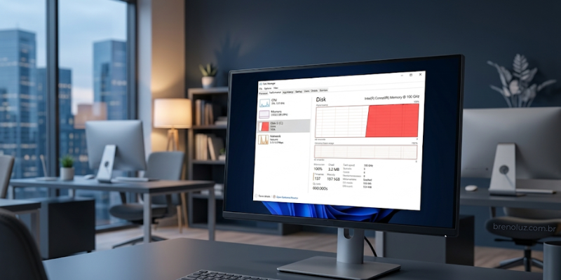

O que acontece quando o disco está sempre em 100%
Publicado em
Quando o disco do computador fica constantemente em 100% de uso, o sistema começa a apresentar lentidão, travamentos e respostas muito demoradas aos comandos do usuário. Esse problema é comum no Windows e costuma gerar a sensação de que o computador está “congelando”, mesmo em tarefas simples como abrir um navegador ou acessar arquivos.
O uso elevado do disco indica que o sistema está tendo dificuldade para ler ou gravar dados. Em discos rígidos tradicionais, conhecidos como HDs, isso acontece com mais frequência, pois esse tipo de armazenamento possui limitações físicas de velocidade. Quando vários processos tentam acessar o disco ao mesmo tempo, o sistema entra em uma espécie de fila, fazendo com que tudo fique mais lento.
Um dos primeiros impactos perceptíveis é o aumento no tempo de inicialização do Windows. O computador demora para ligar, os programas abrem lentamente e o sistema pode ficar praticamente inutilizável nos primeiros minutos após o boot. Esse comportamento costuma estar relacionado a serviços em segundo plano, atualizações automáticas, indexação de arquivos ou programas iniciando junto com o sistema.
Além da lentidão, o uso constante do disco em 100% pode causar travamentos frequentes. O cursor do mouse pode continuar se movendo, mas os programas não respondem, janelas demoram a abrir e mensagens de “não está respondendo” se tornam comuns. Isso ocorre porque o Windows depende do disco para carregar dados essenciais, e quando ele está sobrecarregado, todo o sistema é afetado.
Outro efeito negativo é o aumento do desgaste do disco. Em HDs, o uso intenso e contínuo pode acelerar a degradação mecânica, reduzindo a vida útil do componente. Em casos mais graves, isso pode resultar em falhas, erros de leitura e até perda de dados importantes. Embora SSDs sejam mais rápidos, também podem sofrer impacto quando submetidos a uso excessivo causado por má configuração do sistema.
Muitas vezes, o problema não está apenas no hardware, mas em configurações inadequadas do Windows ou em softwares mal otimizados. Serviços desnecessários, programas rodando em segundo plano, antivírus mal configurados e sistemas desatualizados podem manter o disco em uso máximo constantemente. Identificar a causa correta é essencial para resolver o problema de forma definitiva.
Quando o disco permanece sempre em 100%, ignorar o problema não é uma boa opção. Além de comprometer a experiência de uso, isso pode gerar falhas maiores com o tempo. Ajustes no sistema, otimização de processos e, em muitos casos, a substituição do HD por um SSD são soluções que devolvem desempenho e estabilidade ao computador.
Um disco em uso constante no limite não significa necessariamente que o computador é antigo, mas sim que o sistema precisa de manutenção. Um diagnóstico técnico correto permite identificar a origem do problema e aplicar as soluções adequadas, evitando prejuízos e prolongando a vida útil do equipamento.